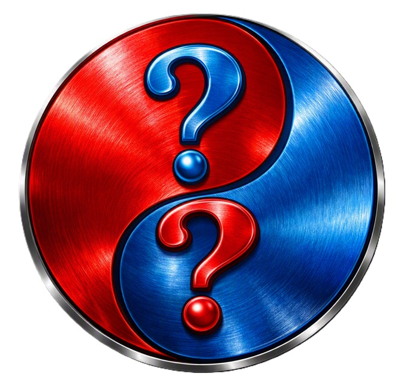

Yin Yang Origin and Symbolism
Two interpretations of the yin yang symbol that are not opposites.
Introduction: The Yin–Yang Symbol in Eastern Tradition
The yin–yang symbol comes from the classical Chinese philosophical tradition, especially the schools associated with Taoist cosmology. It is not originally a monotheistic symbol; it emerges from a worldview that includes multiple spiritual forces, ancestral veneration, and cosmic dualities. Within that system, yin and yang describe complementary aspects of reality—dark/light, receptive/active, cold/hot, winter/summer— interacting in cycles.
We have never sent a messenger who did not eat food and walk in the marketplaces.
My only income is voluntary donations.
If you would like to support this work, you may give through Cash App:
Cash App:
https://cash.app/$phirunltd
If you do not use Cash App, you can donate through Gumroad by entering any amount and downloading my ebook:
Gumroad:
Donate via Gumroad
The ebook remains free for everyone. You can download it here:
Free Ebook:
Download on GitHub
In the early modern period, the Vatican sent a delegation to study Confucian teachings, believing that Confucius’s ethical system might resemble the moral teachings attributed to Jesus. The delegation concluded that Confucian ethics were valuable but not parallel to Christian doctrine. However, they returned with extensive notes on Taoist cosmology, including the yin–yang framework, because they believed it offered a coherent explanation of how dualities operate within creation. This is how the symbol entered Western philosophical discussion.
One Symbol, Two Possible Interpretations
Interpretation One: Good and Evil as Opposites
In popular Western usage, yin and yang are often interpreted as Good versus Evil, two opposing forces locked in balance. This interpretation treats the symbol as a diagram of moral dualism—a universe divided into two competing moral realms.
But this interpretation has a structural flaw: if one half represents “good” and the other “evil,” then the symbol becomes asymmetrical in moral value, even though its geometry is symmetrical. This creates a contradiction: “this for me but not for you; this for you but not for me.” That is the ancient definition of hypocrisy—selective application of moral standards. This interpretation also mirrors the “knowledge of the tree of good and evil” in the Genesis narrative: a worldview where everything is divided into opposites, and humans attempt to navigate them by choosing one side over the other.
A Subtle Origin of the Dualistic Interpretation
There is a quiet but important reason why the “good versus evil” interpretation of the yin–yang symbol emerged in Western thought. It comes from a single biblical line: “I will create enmity between you and the woman.” This verse introduced this good vs. evil yin yang interpretation into the worldview. It established a structural division: one side aligned with [this], one side aligned with [that], and a state of enmity between the opposing sections.
Once that idea exists, Western interpreters tend to see all dual structures—including the yin–yang—through the lens of moral opposition. The symbol becomes a diagram of conflict rather than compatibility.
This is why the first interpretation exists at all: the biblical worldview contains a foundational moral divide, and the yin–yang symbol contains a visual divide. Western readers map one onto the other. But this mapping is not what the original symbol meant. It is a reinterpretation shaped by the idea of enmity, not by the geometry of the symbol itself.
Abrahamic Scriptures Reject Moral Dualism
Across the Abrahamic traditions, the idea of coexisting moral opposites is rejected. Instead, the scriptures consistently teach that evil must be removed, not balanced.
In the Torah, the instruction appears repeatedly: “you must purge the evil from among you.” Evil is not a counterpart to be tolerated; it is a violation to be removed. In the New Testament, the instruction is procedural: warn the wrongdoer, and if they refuse correction, remove them from the community. The Qur’an contains similar legal logic and adds the principle that good people are for good people and corrupt people are for corrupt people, reinforcing the idea that moral alignment is not dualistic but selective.
In the Genesis narrative, Adam follows his companion into disobedience and is himself cursed, even though he was not the initiator. This establishes a structural rule: if one follows a companion into wrongdoing, the consequence applies to both, because moral alignment is individual, not shared. God can give a person a new companion; He does not give a new God. The second lesson of scripture is: never follow a companion into wrongdoing.
The Structural Contradiction
This for me but not for you — and this for you but not for me — is hypocrisy.
Any system that applies one rule to itself and another rule to others is hypocrisy.
Dualistic interpretation cannot escape this contradiction.
This is why the dualistic interpretation cannot stand in any Abrahamic framework.
God Hates Hypocrites
Across the scriptures, hypocrisy is singled out as a severe moral violation. In the New Testament, Jesus condemns hypocrites repeatedly and assigns them to the worst possible judgment, warning against hypocrisy explicitly before his departure. The Qur’an states that hypocrites receive the worst level of hell, lower than all other groups, because hypocrisy destroys moral integrity from within.
Across the traditions, the message is consistent: hypocrisy is the most dangerous moral state. It is worse than ignorance, worse than error, and worse than open wrongdoing, because it corrupts the moral field while pretending to uphold it.
Alternate Interpretation: Compatibility and Mutual Beneficiality
When I see the yin–yang symbol, I do not see “polar opposites.” I see a relationship of compatibility, mutual beneficiality, and structural harmony. The smaller circle inside each half is not a “seed of the opposite.” It is the bonding point — the place where each half contains what allows it to connect with the other.
This interpretation is non‑dualistic. It does not treat the two halves as enemies, rivals, or moral opposites. Instead, it treats them as complementary partners, each bringing something the other needs, and each containing a point of connection that makes the relationship possible.
In this reading, yin and yang are not “good vs. evil.” They are two compatible forces that fit together in a way that is mutually beneficial.
Examples of Non‑Dualistic Mutual Compatibility
Day and Night
Day is not “good,” and night is not “evil.” They are different phases of one cycle. Each makes the other possible. Each provides what the other lacks.
Rest and Activity
Rest is not the opposite of activity. Rest supports activity. Activity requires rest. They are structurally compatible, not morally opposed.
Inhalation and Exhalation
Breathing is one process with two movements. Inhalation is not “good,” and exhalation is not “bad.” They are mutually necessary, each completing the other.
Soil and Seed
The soil is not the opposite of the seed. The seed cannot grow without the soil, and the soil’s purpose is fulfilled by supporting growth. This is compatibility, not dualism.
Aligned Companionship
Two aligned individuals are not “opposites.” They are compatible, each bringing qualities that support the other. Their connection is formed at the point where their identities align — just like the small circle inside each half of the yin–yang.
The Bonding Point
In this interpretation, the small circle inside each half is the key. It represents the point of connection, the place where each half contains what allows it to bond with the other. This is not “a little good inside evil” or “a little evil inside good.” It is the structural link — the compatibility point. The two halves are not fighting. They are fitting together.
Biological Union and Mutual Enjoyment
A clear example of non‑dualistic compatibility is the biological union between male and female. They are different, but not opposites. They are complementary, not adversarial. And the union only functions properly when both participants benefit from the relationship.
In human terms, this is simple: if both partners are not experiencing mutual benefit — you're doing it wrong and the relationship is misaligned. This is not a sexual statement — it is a compatibility principle:
- Mutual participation
- Mutual contribution
- Mutual benefit
- Mutual alignment
The yin–yang symbol reflects this structure: two different halves, each containing a point of connection, each completing the other, and each benefiting from the union. This is the essence of non‑dualistic mutual compatibility.
Related Pages
The End of Time
The Eye of the Needle
Laughter Is Better Than Sex